SAiデジタルメイキング！（ログレス）5
5.他モンスター、背景
目次
・ラフ、下書き
・肌、髪
・目、服
・もふもふ系
・他モンスター、背景←今ここ
ラストスパートです！だんだん疲れてきてレイヤー数が少なくなり、直感での色運びが増えていきます。
直感で描かれるとメイキング時の説明に困るのでやめてほしいですね（？？）。
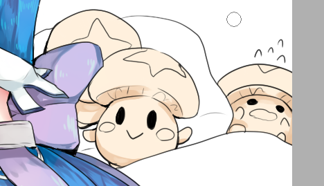
背景のキノポ達を塗っていきます。
影レイヤーなんてものも（疲れてきたので）分けないで、もうなんか光も影も全部1レイヤーで済ませちゃってます。
ほら筆運びが雑。要改善。
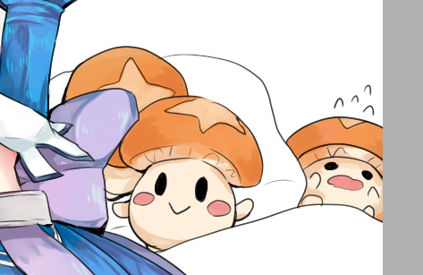
ここまで1レイヤー。色が超適当でしょう。
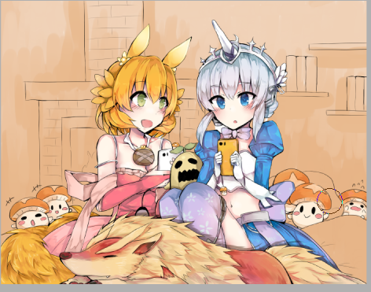
キノポを塗り終わったので、背景レイヤーを一番下に作ります。
ここからの背景は（加工以外）全て1レイヤーで塗っています。使用するのはほぼ筆です。
油絵のような感覚で適当に色を作って混ぜながら描いているんだと思います（思います）
画像は、薄茶色(R241,G210,B183)の上に茶色(R230,G178,B132)を筆でざっくり重ねました。
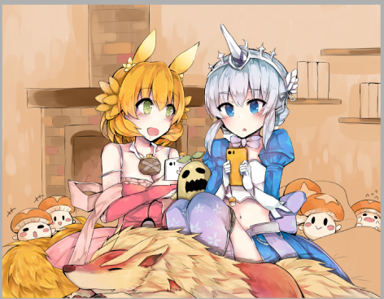
暖炉を描きました（説明放棄の姿勢）
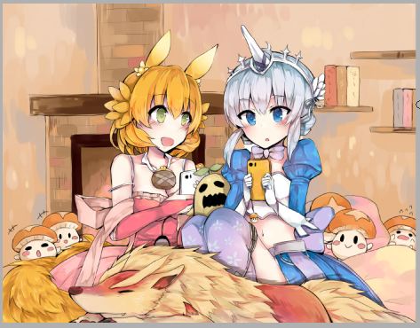
おお～っとここで暖炉が濃くなる！！本とクッションも塗られている！！！壁に青灰色っぽい色と黄色っぽい色も足されているぞ！！！壁上部も赤色っぽいぞ！！！一体何を考えて塗っているのかさっぱり分かりません！！！！
がんばって！！！分かって！！！
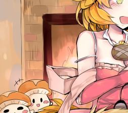
ここで加工です。発光レイヤーを上に載せて、赤色を置きました。
炎の明るさを強調しました。
これで背景工程終了です。意味が分からなくてすみませんホント。。。要検証です。
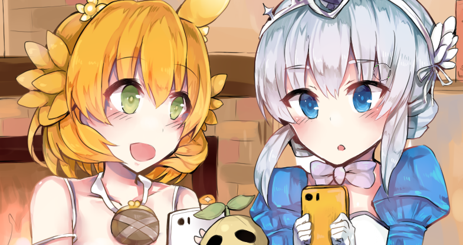
最終加工に入ります。
線画レイヤーの上に新しいレイヤーを作成し、「下のレイヤーでクリッピング」をします。
このレイヤーに色を塗って、線画の色を変えていきます。
目の線の端や、髪と肌の境界線に、赤っぽい色を載せて線画の色を変えるのが好きです。
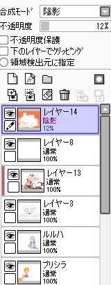
一番上のレイヤーに陰影レイヤーを作り、画像のようにオレンジ色で塗って、絵全体の調子を整えます。
ちなみに何故「陰影」レイヤーを選んだのかというと、ほぼすべての加工を試してみて、「陰影が一番しっくりくるかな～」と思ったからです。
適当です。
レイヤー自体の不透明度は12%になっていますが、これも色を見ながらゲージを上げ下げして、12%ぐらいが一番自然な不透明度かな～と思ったからです。
適当です。
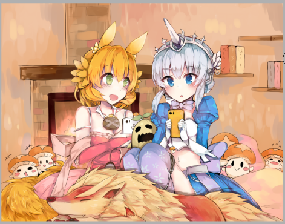
心なしか塗った範囲がオレンジっぽくなったでしょうか。
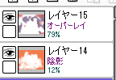
さらに上のレイヤーにオーバーレイを作ります。
画像のように画面の色彩バランスを調整したら完成となります。
画面を見ながらオーバーレイで色々と色を付け足す感じなので、ほんっと、どの色を選ぶかは勘です。適当です。
説明しきれなくてすみません！！！
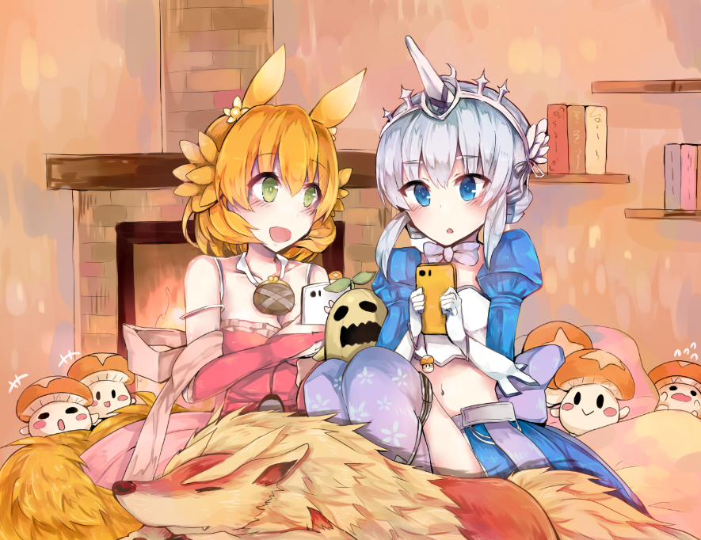
懺悔
ここまでお付き合いくださってありがとうございました！
できるだけ丁寧に解説しよう～と思って描いていきましたが、
絵という性質上、どうしても言葉で説明できないところ（特に後半）がでてきてしまって
ふわ～っとしたまま終わらせる結果になっちゃいました(´・ω・`)；；；
色選択については感覚ですが、RGB値をなんとか分析したら
その無意識の色選択の感覚にも説明がつくんじゃないかな？と思い、（難しいことはできないので）簡単な分析を考えていこうと思います。
もう少しだけ続きます。いつになるか分かりませんが、次の更新を楽しみに…してくれたら嬉しいな(｀・ω・´)ｂ
<<前へ 次へ>>（準備中）
イラスト に戻る